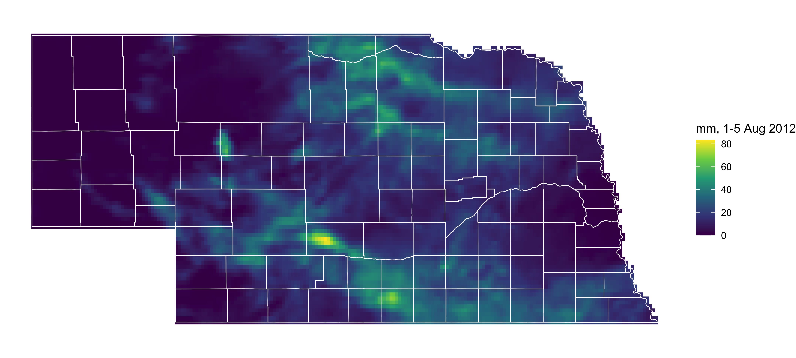
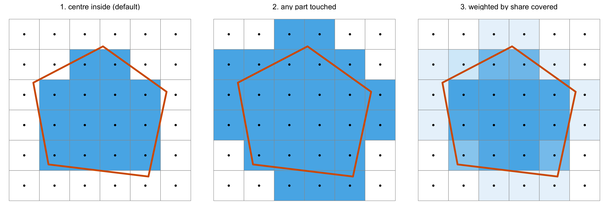
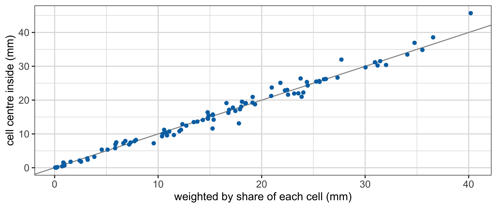
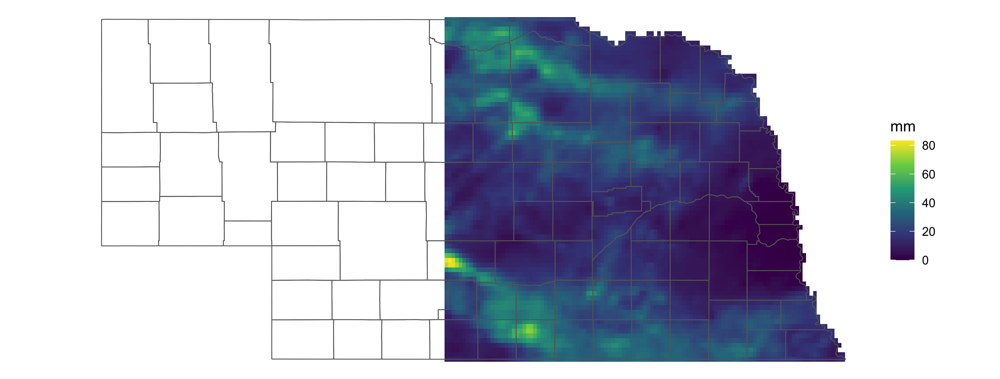
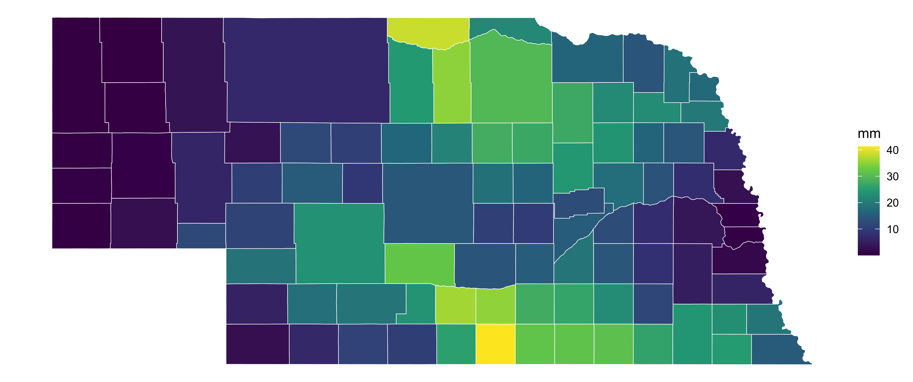

Weather, soil, satellite images and elevation come as rasters (grids of cells, lecture 09-2). Your units of analysis, such as fields, counties and farms, are usually vector features (lecture 09-1). Most research that uses both needs one step: putting the raster’s values onto the vector features. An AI assistant can write that step in one line. What it cannot do is:
So today is about:
sf, terra, tidyterra, tidyverse and here packages if you have not already. terra is the package for rasters; tidyterra lets ggplot draw them.here::here() (lecture 03-1).ne_ppt_2012aug.tif: daily precipitation from PRISM (a US weather dataset), in millimetres, one layer per day from 1 to 5 August 2012, cells about 3.5 km wide, NAD83 longitude and latitudene_counties.gpkg: the 93 counties of Nebraska, in the same CRSThe slides mostly use the total over the five days, one layer made by adding the five (sum(ppt)).

The question the slides answer: how much rain fell in each county over those five days?
| Operation | What it does | Shape of the result | Typical reason |
|---|---|---|---|
| Crop | Cuts the raster to the rectangle around the vector features | a smaller raster | a smaller file, a map of just your area |
| Mask | Sets every cell outside the polygons to missing (NA) | a raster of the same size | a map that shows only your area; leaving outside cells out of a calculation |
| Extract | Reads the raster’s values at the vector features | a table, one row per feature or per cell | putting weather, soil or crop data onto your fields or counties |
Extracting is the one your analysis depends on. Cropping and masking are usually steps before it, or for maps.
Note
Cropping a raster is like st_crop() for vector layers in lecture 09-4: it cuts to a rectangle, not to the outline. Masking is what cuts to the outline.
Each point lies in exactly one cell, so it gets that cell’s value: one value per point and layer. Five layers give five values per point.
A polygon covers many cells, some only partly. There are three rules for which cells count, and they give different answers:

| Rule | Cells used | terra::extract() option |
|---|---|---|
| 1. The cell’s centre (black dot) is inside | 14 | the default |
| 2. Any part of the cell is inside | 26 | touches = TRUE |
| 3. Every touched cell, weighted by the share of it inside (shown by how dark the cell is) | 26, with weights | exact = TRUE (returns a fraction column) |
The rule decides the answer when the cells near the edge differ from those in the middle and when the polygon covers few cells. With 3.5 km cells, a Nebraska county covers between 40 and 941 cell centres, and the rule changes county averages very little. With cells five times wider (about 18 km), 19 counties cover only 1 or 2 cell centres, and the default and weighted averages differ by up to 5.5 mm for the same county (silent failures, later).
The weighted rule is the most accurate; the default is the fastest. What matters is that you choose, knowing the cell size relative to your polygons.
| Part | What it is | Required? |
|---|---|---|
raster_function |
crop or mask, from terra |
Yes |
raster |
The raster to cut, always first | Yes |
vector_layer |
The features that decide which cells stay; an sf layer works, or a terra vector made with vect() |
Yes |
The two are usually chained, crop first to make the raster small, then mask: mask(crop(ppt, counties), counties).
| Part | What it is | Required? |
|---|---|---|
values_table <- |
A table (not a layer): column ID, then one column per raster layer |
Needed to keep the result |
raster |
The raster to read, always first | Yes |
vector_layer |
Points or polygons, always second | Yes |
fun = |
For polygons: summarise each polygon’s cells (mean, sum, …) into one row per polygon |
No; without it, one row per cell |
exact = TRUE |
For polygons: add the share of each cell inside (rule 3) | No; default is rule 1 |
na.rm = TRUE |
Ignore missing cells when summarising | No |
ID is the row number of the feature in the vector layer: ID == 3 is the third county. It is not the county’s own ID.
terra::extract(ppt, counties, fun = mean, na.rm = TRUE, ID = FALSE): no ID column; the rows are in the vector layer’s orderterra::extract(ppt, counties, bind = TRUE): the values added to the vector layer directly, as a terra vectorexactextractr::exact_extract(ppt, counties, "mean"): another package, often written by AI; it always uses rule 3 (weighted by share), and returns a plain table in the layer’s orderterra::zonal(ppt, vect(counties), fun = "mean"): a summary per polygon; the same as extract() with funPrecipitation at each well, all five days:
ID ppt_2012_08_01 ppt_2012_08_02 ppt_2012_08_03 ppt_2012_08_04 ppt_2012_08_05
1 1 3.438 15.859 0 8.652 0
2 2 8.752 14.504 0 0.413 0
3 3 12.323 26.124 0 0.049 0One row per well (1000 rows for 1000 wells), one column per day. Putting it back on the wells is a column bind, since the rows are in the same order: bind_cols(wells, select(ppt_wells, -ID)).
Average five-day total in each county, rule 3:
ID ppt_total fraction
1 1 20.734 0.2410224
2 1 20.515 0.2716368
3 1 20.718 0.2704296One row per cell per county, with fraction the share of the cell inside the county. Summarised to one row per county, weighting by fraction:
county_ppt <- ex |>
group_by(ID) |>
summarise(ppt_mm = sum(ppt_total * fraction) / sum(fraction)) |>
mutate(countyfp = counties$countyfp[ID])
nrow(county_ppt)[1] 93counties$countyfp[ID] turns each row number back into the county’s own ID, so the table can be merged onto the counties by key column (Chapter 3).
crop() reports a different problem, and extract() transforms with a warning.ID is a row number, so the vector layer must not be re-sorted between extracting and merging back.The counties transformed to UTM zone 14N (metres), the raster left in longitude and latitude:
Error: [crop] extents do not overlapcrop() stops, but its message says the extents do not overlap, not that the CRSs differ: the numbers in metres and the numbers in degrees describe different places. extract() behaves differently:
Warning: [extract] transforming vector data to the CRS of the rasterIt transforms the counties for you and warns, and the result is correct. Do not depend on either behaviour: transform the vector to the raster’s CRS yourself (rasters lose detail when transformed, vectors do not), and ask for the CRS check.
The same county averages from the coarse raster (cells about 18 km), by the default rule and by the weighted rule:

Each dot is a county; on the grey line, the two rules agree. 27 counties differ by more than 1 mm, up to 5.5 mm. No error either way. With the 3.5 km cells of the original raster, the two rules give nearly the same numbers; with large cells, they do not.
Suppose the raster you were given stopped at 100 degrees west, the eastern part of Nebraska only:

Extracting county averages gives a value for every county that touches the raster:
The second group is the silent one. The check is whether each county lies entirely inside the raster’s rectangle: here 58 of 93 do.
A mean over cells that include NA is NA:
So a county with one missing cell gets NA from fun = mean, and with na.rm = TRUE it gets the mean of its other cells. The second is usually what you want, but then a county entirely of missing cells gets NaN (not a number), and one mostly of missing cells gets a mean of a few cells. Ask for the number of non-missing cells per feature.
extract() returns rows in the order of the vector layer at the moment it ran. If the layer is sorted, filtered or joined before the values are bound back by position, each value lands on the wrong feature, with no error. The fix is the one in the polygon example: turn ID into the feature’s own ID column straight away, and merge by that column.
The same way of working as on the slide of this name in lecture 02-1: you ask, the AI writes into your .qmd with one plain-English sentence above each chunk, you render, and you judge the HTML. For an extraction, judging the HTML means putting the map of the results next to the map of the raster: the same pattern should appear in both. Every request for code ends with the closing instructions of lecture 03-1, under Recommended requests.
From the raster (lecture 09-2): its CRS, cell size, extent (the rectangle it covers), number of layers and what each one is, the units of its values, and how it marks missing cells. From the vector layer (lecture 09-1): its CRS, number of features, and ID column. Then one map of the two together.
From those, before any extraction:
For the precipitation and counties: the raster’s rectangle covers Nebraska, apart from at most a few hundred metres at the eastern edge (the raster stops at -95.312 degrees, the counties at -95.308); the smallest county covers 40 cell centres, so the rule matters little; the result should have 93 rows, and values between 0 and the raster’s largest five-day total, 83.2 mm.
The AI knows terra::extract(). Your request supplies what it cannot know:
The AI has to guess the files, which layer, how to treat edge cells and missing cells, and how to put the numbers back on the counties. It will usually write terra::extract(..., fun = mean) and bind the result by position.
In my R project, data/ppt.tif is a raster of daily precipitation in mm,
one layer per day (5 layers), NAD83 longitude and latitude, with cells
about 3.5 km wide. data/counties.gpkg has 93 counties, ID column
countyfp, in the same CRS. I want one row per county with the average
over the county of the total precipitation of the 5 days, weighting each
cell by the share of it inside the county, in a table called county_ppt
with countyfp and ppt_mm. Ignore missing cells.
Then check: the CRS of both, the number of rows (I expect 93), the
number of counties with no value (I expect 0), the number of counties not
entirely inside the raster's rectangle (I expect 1, Richardson, whose
eastern tip passes the raster's edge by a few hundred metres), the
smallest number of cells touched by a county (I expect more than 40),
and the range of ppt_mm (between 0 and the raster's largest 5-day
total). Draw a map of the counties filled by ppt_mm.
Put the code in my Quarto document analysis/weather.qmd, under the
heading "County precipitation", as R code chunks. Above each chunk,
write one plain-English sentence saying what it does and why. Build
every path with here::here(); no setwd(), no absolute paths. Print each
check on its own line as "name of check: expected X, got Y". Render the
document to HTML.In the rendered HTML, a sentence, then the chunk it describes.
Read the raster and the counties, and add the five days into one layer of totals.
For each county, read every cell it touches with the share of the cell inside, and average weighting by that share.
Print the checks.
inside <- relate(vect(counties), vect(ext(ppt_total), crs = crs(ppt_total)), "within")[, 1]
cat(
paste("CRS match: expected TRUE, got", st_crs(counties) == st_crs(crs(ppt_total))),
paste("rows: expected 93, got", nrow(county_ppt)),
paste("counties with no value: expected 0, got", n_counties - nrow(county_ppt)),
paste("counties not inside the raster: expected 1 (Richardson), got", sum(!inside),
paste0("(", paste(counties$name[!inside], collapse = ", "), ")")),
paste("fewest cells touched by a county: expected more than 40, got", min(county_ppt$n_cells)),
paste("ppt_mm range: expected 0 to", round(global(ppt_total, "max", na.rm = TRUE)[1, 1], 1),
"got", round(min(county_ppt$ppt_mm), 1), "to", round(max(county_ppt$ppt_mm), 1)),
sep = "\n"
)CRS match: expected TRUE, got TRUE
rows: expected 93, got 93
counties with no value: expected 0, got 0
counties not inside the raster: expected 1 (Richardson), got 1 (Richardson)
fewest cells touched by a county: expected more than 40, got 56
ppt_mm range: expected 0 to 83.2 got 0 to 41.3Every line matches, including the one you expected to show a county outside the raster: Richardson’s eastern edge, on the Missouri River, reaches about 354 m past the raster’s last column. You knew that from looking at the extent before asking, and a sliver that small cannot move a county average. On another raster, the same check is the one that catches a county left half covered.
The fewest-cells line counts every cell the county touches (56); the 40 on the “Look at both before you ask” slide counted only the cells whose centre is inside.
The AI tested “inside the rectangle” with terra::relate(). The sf version, st_within(counties, st_as_sfc(st_bbox(ppt_total))), reports 13 counties outside instead, because in longitude and latitude sf draws the rectangle’s edges as the shortest paths over the globe, which curve away from the lines of latitude. If a check gives a surprising count, ask the AI why before acting on it.
| Ask the AI to print | Catches | What only you can supply | |
|---|---|---|---|
| 1 | the CRS of both | a mismatch that crop() reports with a confusing message and extract() repairs with a warning |
the CRS from the documentation |
| 2 | rows of the result | one row per cell when you wanted one per feature; features dropped | what one row should be |
| 3 | features with no value (NA or NaN) | features outside the raster, or over missing cells | how many should have none |
| 4 | features not entirely inside the raster’s rectangle | features with a value from only part of their area | (usually 0) |
| 5 | cells per feature, smallest | polygons covered by so few cells that the rule matters | how big your polygons are |
| 6 | the range of the results | wrong units, wrong layer, missing-cell codes read as values | the raster’s own range |
| 7 | a map of the results next to a map of the raster | anything the numbers did not show | what the pattern should look like |
The map from the strong request, next to the raster it came from:

The wetter counties sit where the raster map on “The data on these slides” shows heavier rain, and the scale runs over the same values. A result whose pattern does not match the raster’s is the sign of values bound back to the wrong features.
The checks above apply to any extraction. What you know about the data gives stronger ones.
For three counties of my choice, <county names>, print the number of
cells used, their smallest and largest value, and the county's result,
so I can check the result lies between them.
Put the code in my Quarto document analysis/analysis.qmd, under the
heading "Checks", as R code chunks. Above each chunk, write one
plain-English sentence saying what it does and why. Build every path
with here::here(); no setwd(), no absolute paths. Print each check on
its own line as "name of check: expected X, got Y". Render the document
to HTML.A student asked an AI to “add mean precipitation to my county table”, and got this:
A. What does each line do?
B. Which line puts values on the wrong counties, and why is there no error?
C. What does line 3 do with the CRS, and what would crop() have done in its place?
D. What happens to a county with one missing cell?
A. Reads the raster; reads the counties and sorts them by name; extracts the mean of each layer for each county, after transforming the counties to UTM zone 14N; binds the values onto a fresh copy of the counties, which is in the file’s order.
B. Line 4. The values are in alphabetical order (line 2 sorted the counties) but are bound to the counties in the file’s order. Both have the same number of rows, so bind_cols() has nothing to complain about.
C. It transforms the counties away from the raster’s CRS; extract() transforms them back with a warning, so the values are right. crop() would stop with “extents do not overlap”.
D. Without na.rm = TRUE, its mean is NA.
Copy one, then replace every <...> with what you found by looking at the files. Every request for code ends with the closing instructions.
The lines that end every request for code. Replace the two blanks; leave “expected X, got Y” as it is, because it tells the AI how to print each check:
Put the code in my Quarto document <path to your .qmd>, under the
heading "<heading>", as R code chunks. Above each chunk, write one
plain-English sentence saying what it does and why. Build every path
with here::here(); no setwd(), no absolute paths. Print each check on
its own line as "name of check: expected X, got Y". Render the document
to HTML.A chat assistant cannot render: paste its chunks into your .qmd and render it yourself. An agent in your editor or terminal can do every step.
In my R project, <path to the raster> is a raster and <path to the
vector layer> is a vector layer. For the raster, print its CRS, cell
size, extent, number of layers, layer names, and smallest and largest
value. For the layer, print its CRS, number of features and bounding
box. Then print whether every feature lies entirely inside the raster's
rectangle, and draw one map with the raster and the features' outlines
on top.
Put the code in my Quarto document <path to your .qmd>, under the
heading "<heading>", as R code chunks. Above each chunk, write one
plain-English sentence saying what it does and why. Build every path
with here::here(); no setwd(), no absolute paths. Print each check on
its own line as "name of check: expected X, got Y". Render the document
to HTML.In my R project, <path to the raster> holds <what the values are, with
units>, one layer per <what each layer is>, in EPSG <code>. <path to the
point layer> has <number> points, ID column <the column that identifies
each point>. Add the raster's value at each point, one column per layer,
to the point layer, in a layer called <name>. Transform the points to
the raster's CRS first.
Then check: the number of rows before and after (I expect them equal),
the number of points with a missing value (I expect <number>), the range
of each new column, and draw a map of the points coloured by <layer>.
Put the code in my Quarto document <path to your .qmd>, under the
heading "<heading>", as R code chunks. Above each chunk, write one
plain-English sentence saying what it does and why. Build every path
with here::here(); no setwd(), no absolute paths. Print each check on
its own line as "name of check: expected X, got Y". Render the document
to HTML.In my R project, <path to the raster> holds <what the values are, with
units>, in EPSG <code>. <path to the polygon layer> has <number>
polygons, ID column <the column that identifies each polygon>. I want one
row per polygon with the <mean, sum, or other summary> of <which
layers>, weighting each cell by the share of it inside the polygon, and
<ignoring or keeping> missing cells, in a table with the polygon's ID
column. Match rows back by the ID column, not by position.
Then check: the number of rows (I expect <number>), the number of
polygons with no value, the number not entirely inside the raster's
rectangle, the smallest number of cells in a polygon, and the range of
the results. Draw a map of the polygons filled by the result next to a
map of the raster.
Put the code in my Quarto document <path to your .qmd>, under the
heading "<heading>", as R code chunks. Above each chunk, write one
plain-English sentence saying what it does and why. Build every path
with here::here(); no setwd(), no absolute paths. Print each check on
its own line as "name of check: expected X, got Y". Render the document
to HTML.Crop <path to the raster> to the area of <path to the polygon layer>,
then set every cell outside the polygons to missing, and draw a map of
the result with the polygons' outlines on top, missing cells
transparent, and a legend titled "<title with units>".
Then check: the CRS of both, and the number of cells with a value before
and after.
Put the code in my Quarto document <path to your .qmd>, under the
heading "<heading>", as R code chunks. Above each chunk, write one
plain-English sentence saying what it does and why. Build every path
with here::here(); no setwd(), no absolute paths. Print each check on
its own line as "name of check: expected X, got Y". Render the document
to HTML.Explain this R code to me. For each line, write one plain-English
sentence. Then list:
1. what one row of each result is, and how the values are matched back
to the features
2. which cells count for each polygon, and what happens to missing cells
3. any line that could give a wrong result without an error, and what
check would reveal it
<paste the code here>| You need to understand | The AI can write |
|---|---|
| Crop cuts to a rectangle, mask to the outline, extract reads values | crop(), mask(), extract() |
| A point gets one cell; a polygon gets many, by a rule you choose | exact = TRUE, touches = TRUE |
| Whether the raster covers every feature, fully | The coverage check |
| What the values are: units, which layer is which day, how missing cells are marked | sum(), na.rm = |
That ID is a row number, and the result must be matched back by an ID column |
counties$countyfp[ID], the merge |
| What a correct result looks like: rows, range, a pattern on the map | The checking code and the maps |
Every extraction: look at the raster and the features together, and write down whether the raster covers every feature, how many cells the smallest polygon covers, and the range the results must fall in. Ask for rows, features with no value, coverage, cells per feature, the range and a map. Render, and judge the HTML against what you wrote down.